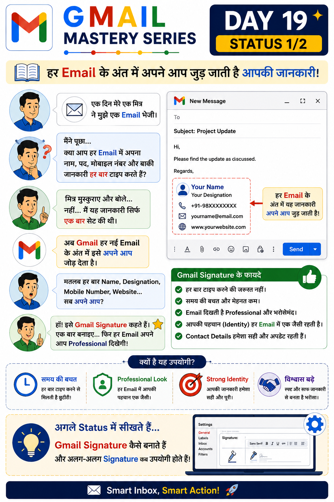
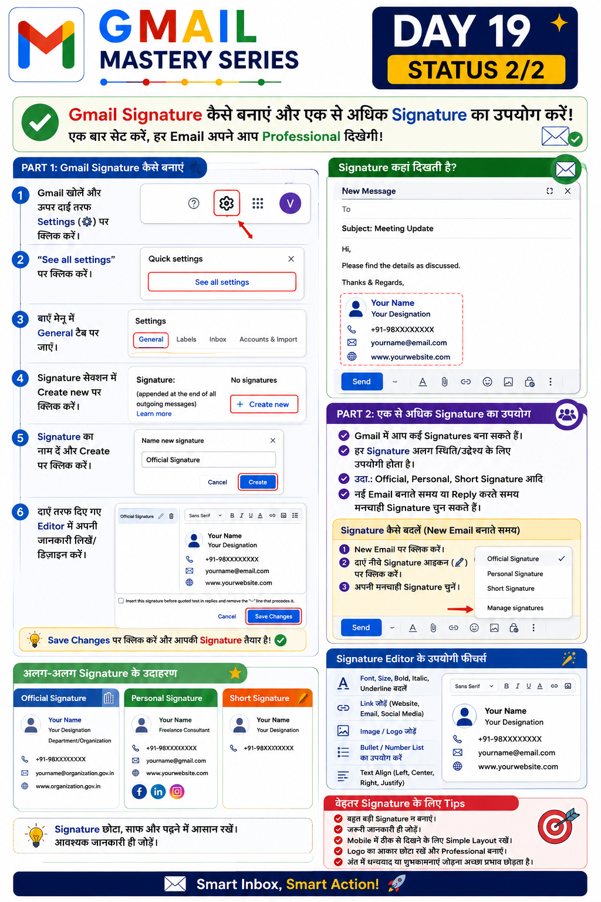

पेशेवर पहचान — स्वचालित Professional Signature सेट करें
💡 मूल कहानी और सिग्नेचर का महत्व (The Day 19 Story):
नीचे दिए गए मूल इन्फोग्राफिक (Day 19 Status 1) में देखें:
"एक दिन मेरे एक मित्र ने मुझे ईमेल भेजी। मैंने पूछा: क्या आप हर ईमेल में अपना नाम, पद और मोबाइल नंबर हर बार टाइप करते हैं? मित्र मुस्कुराए और बोले: नहीं... मैंने यह जानकारी केवल एक बार सेट की थी। अब Gmail हर नई ईमेल के अंत में इसे अपने-आप जोड़ देता है!"
दफ्तर के पत्राचार में आपकी पहचान (Name, Designation, Department, Phone) स्पष्ट होनी चाहिए। एक बार सिग्नेचर सेट करने के बाद हर नई ईमेल अपने-आप आधिकारिक और पेशेवर दिखती है।

🔍 पूरा बड़ा देखने के लिए क्लिक करें⚙️ सिग्नेचर बनाने और बदलने की विधि:
नीचे इन्फोग्राफिक (Day 19 Status 2) में देखें: Desktop पर Settings $\rightarrow$ General $\rightarrow$ Signature में जाकर '+ Create new' दबाएँ और विवरण लिखें। कंपोज़ विंडो में नीचे बने ✒️ (पेन) आइकन से आवश्यकतानुसार सिग्नेचर बदला भी जा सकता है।

🔍 पूरा बड़ा देखने के लिए क्लिक करें🎯 आपका प्रैक्टिकल कार्य (Hands-on Task):
- 1. सेटिंग्स खोलें: Gmail में ऊपर दाईं ओर गियर आइकन (⚙️) पर क्लिक करके 'See all settings' चुनें।
- 2. Signature सेक्शन में जाएँ: General टैब में नीचे स्क्रॉल करें और Signature के सामने '+ Create new' दबाएँ।
- 3. विवरण भरें: सिग्नेचर का नाम
Officialरखें और एडिटर में अपना नाम, पद, विभाग और फोन नंबर लिखें (उदा. राजेश कुमार | सहायक अभियंता | जल विभाग)। - 4. सेव करें: सबसे नीचे जाकर 'Save Changes' पर क्लिक करें।
- 5. जाँचें: + Compose पर क्लिक करके देखें कि आपकी जानकारी ईमेल में अपने-आप जुड़ गई है या नहीं।
✅ अपेक्षित परिणाम (Expected Result):
अब आपको कभी भी हर ईमेल में नाम और पद टाइप नहीं करना पड़ेगा; हर नया संदेश औपचारिक पहचान के साथ शुरू होगा।